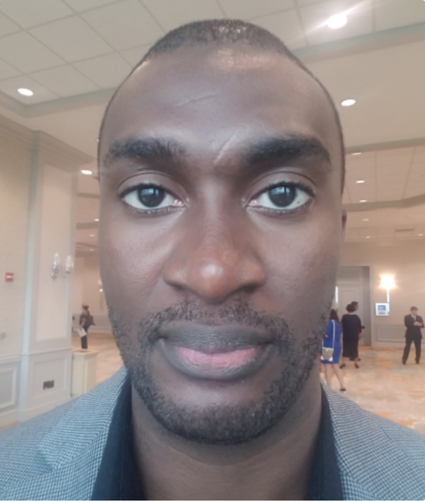

About Me
Sweet, you’ve written a few sentences geared toward your ideal audience. Now what? Many people begin by talking all about themselves, when in actuality, your potential readers are more interested in learning about how your site is going to benefit or interest them. Before you get into your personal bio, try to answer these questions
This one is pretty flexible. You could list the big-name sites your content has been shared on, talk about how you have X years of experience in a particular field, OR you can let your readers know that you’re still learning, too, but love to share things as you discover them. This one is pretty flexible. You could list the big-name sites your content has been shared on, talk about how you have X years of experience in a particular field, OR you can let your readers know that you’re still learning, too, but love to share things as you discover them.